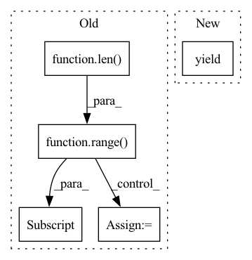

Pattern ID :17075
Before Change
returnData = copy.deepcopy(self.data_source.data_template)
unzip_batch_data = list(zip(*batch_data))
if self.mode=="tuple":
for i in range(len( unzip_batch_data) ) :
if all([isinstance(item, numbers.Integral) for item in unzip_batch_data[i]]):
unzip_batch_data[i]= np.array(list(unzip_batch_data[i])).astype(np.int64)
else:
unzip_batch_data[i] = np.array(list(unzip_batch_data[i]))
yield tuple(unzip_batch_data)
elif self.mode=="dict":
for i in range(len(unzip_batch_data)):After Change
batch_data=[]
if self.data_source.mode=="tuple":
yield tuple(returnData.value_list)
elif self.data_source.mode=="dict":
yield returnData
batch_data = []In pattern: SUPERPATTERN
Frequency: 3
Non-data size: 5
Instances Fragment ID: 57219801
Project Name: allanyiin/trident
Commit Name: 05950421cb740f4d359665b1eae2c6041d538f0d
Time: 2021-02-07
Author: allan@asiaminer.com.tw
File Name: trident/data/samplers.py
M Class Name: BatchSampler
N Class Name: BatchSampler
M Method Name: __iter__(1)
N Method Name: __iter__(1)
M Parent Class: Sampler
N Parent Class: Sampler
M File Name: trident/data/samplers.py
N File Name: trident/data/samplers.py
M Start Line: 152
M End Line: 173
N Start Line: 148
N End Line: 166
Before Change
obs, actions, dones = data_dict["obs"], data_dict["acts"], data_dict["dones"]
dataset = []
trajectory_ind = timestep = 0
for i in range(len( dones) ) :
dataset.append({"context": obs[i], "target": obs[i] , "extra_context": [], "traj_ts_ids": [trajectory_ind, timestep]})
timestep += 1
if dones[i]:
trajectory_ind += 1
timestep = 0
return dataset
After Change
timestep = 0
traj_ind = 0
for step_dict in data_iter:
yield {
"context": step_dict["obs"],
"target": step_dict["obs"],
"extra_context": [], Fragment ID: 57219803
Project Name: humancompatibleai/eirli
Commit Name: 47ccff934463fdfcd9a8887bff27286744d1fe17
Time: 2020-11-16
Author: sam@qxcv.net
File Name: src/il_representations/algos/pair_constructors.py
M Class Name: IdentityPairConstructor
N Class Name: IdentityPairConstructor
M Method Name: __call__(2)
N Method Name: __call__(2)
M Parent Class:
N Parent Class: TargetPairConstructor
M File Name: src/il_representations/algos/pair_constructors.py
N File Name: src/il_representations/algos/pair_constructors.py
M Start Line: 31
M End Line: 40
N Start Line: 33
N End Line: 48
Before Change
obs, actions, dones = data_dict["obs"], data_dict["acts"], data_dict["dones"]
dataset = []
trajectory_ind = timestep = 0
for i in range(len( dones) ) :
dataset.append({"context": obs[i], "target": obs[i] , "extra_context": [], "traj_ts_ids": [trajectory_ind, timestep]})
timestep += 1
if dones[i]:
trajectory_ind += 1
timestep = 0
return dataset
After Change
timestep = 0
traj_ind = 0
for step_dict in data_iter:
yield {
"context": step_dict["obs"],
"target": step_dict["obs"],
"extra_context": [], Fragment ID: 57219802
Project Name: humancompatibleai/eirli
Commit Name: 1086682dee2c96d5c039e3190b1fec8ce4c683bd
Time: 2020-11-16
Author: sam@qxcv.net
File Name: src/il_representations/algos/pair_constructors.py
M Class Name: IdentityPairConstructor
N Class Name: IdentityPairConstructor
M Method Name: __call__(2)
N Method Name: __call__(2)
M Parent Class:
N Parent Class: TargetPairConstructor
M File Name: src/il_representations/algos/pair_constructors.py
N File Name: src/il_representations/algos/pair_constructors.py
M Start Line: 31
M End Line: 40
N Start Line: 33
N End Line: 48